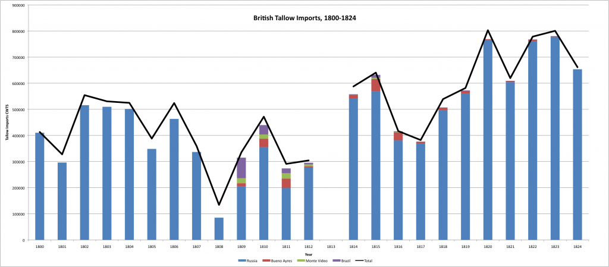
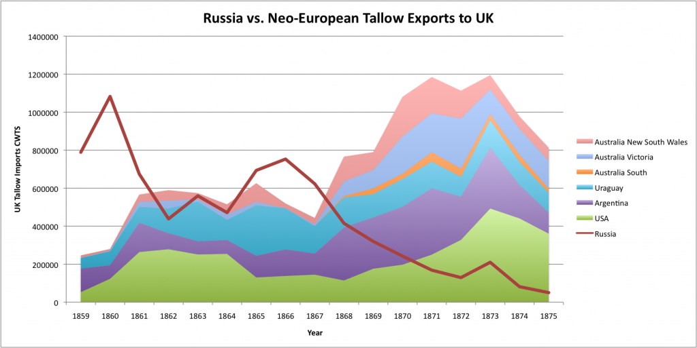
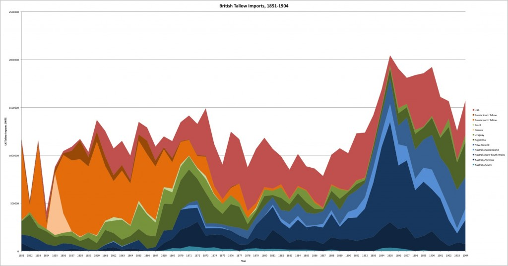
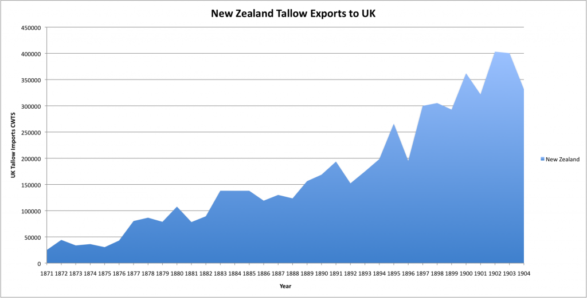

{kind=link}

Click to enlarge.[/caption]The graph above demonstrates that the majority of Britain's tallow imports came from Russia during the early nineteenth century. While the Argentine Republic and Uruguay became significant exporters, they did not challenged Russia's dominance during the first half of the century.
This basic pattern continued through to the 1860s, when the "cattle boom" in the United States and growing tallow imports from South America and Australasia drove down the price of tallow, leading to the collapse of Russian exports to Britain. [caption id="attachment_527" align="aligncenter" width="584"]{kind=link}

Click to enlarge.[/caption] I am still interested in better understanding what happened to the cattle herds on the Eurasian steppe, as Russia began importing large quantities of tallow from Britain in the 1890s. Did this region shift to wheat and other grains with the collapse of tallow exports? Were there factors beyond price competition that led to the collapse (increased grain cultivation, a cold winter or a drought)? I'm looking forward to reading David Moon's forthcoming book on the topic: The Plough that Broke the Steppes. [caption id="attachment_526" align="aligncenter" width="584"]{kind=link}

Click to enlarge.[/caption]I am also doing further research to better understand the boom and bust cycles in tallow exports from the United States and Australasia during the late nineteenth and early twentieth centuries. The American cycle, not surprisingly, coincides with the "cattle boom" and ecological factors played a major role. I expect the same might be true in the Australian case. New Zealand, interestingly, is the only major tallow supplier to grow steadily without a bust through to 1904. I imagine I just need to continue the data entry for another decade or two and I might find a period of crisis for New Zealand.
[caption id="attachment_529" align="aligncenter" width="584"]{kind=link}

Click to enlarge.[/caption] [The main source is a series of Annual statement of the trade and navigation of the United Kingdom with foreign countries and British possessions.]